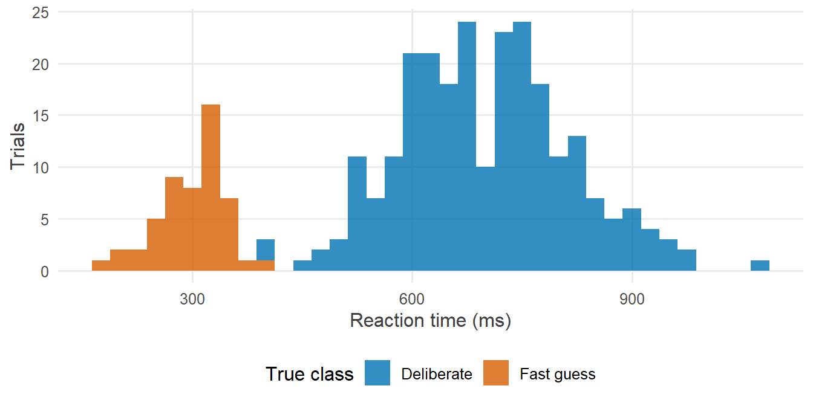
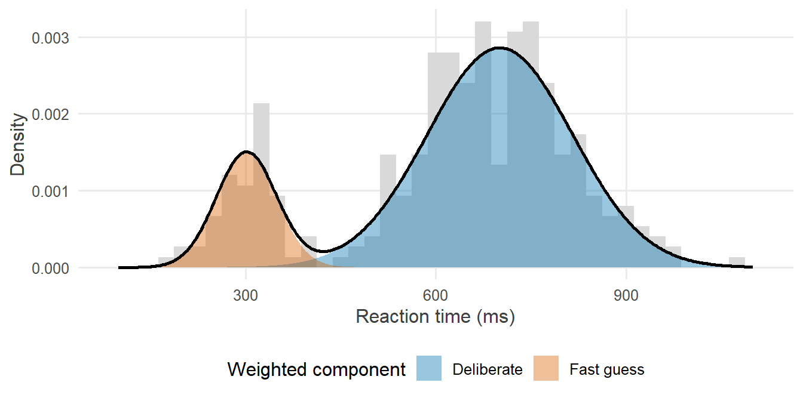
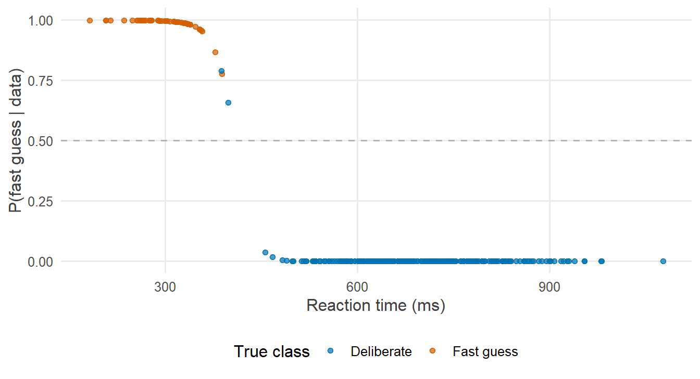

library(tidyverse)
library(cmdstanr)
library(posterior)
library(tidybayes)
source("R/theme.R")
source("R/utils.R")第 15 章 log_sum_exp：边缘化离散变量
怎样在对数尺度上把离散变量“加掉”？log_sum_exp 解决了什么数值问题？边缘化之后怎样找回每个观测的类别？
第 14 章用边缘化绕开了离散参数：对离散变量的所有取值求和。但那一章的写法先用 exp() 把对数概率变回概率，相加后再取 log()。它在那份数据上运行良好，本章却会看到，在另一份再普通不过的数据上，同样的写法连第一步都迈不出去。
解决办法是一个看起来很小的函数：log_sum_exp。它是 Stan 中所有混合模型、潜类别模型、占域模型的基石，也是本系列的最后一块拼图。
1 本章要回答的问题
- 怎样把离散变量“加掉”？
- 为什么要在对数尺度上求和？
log_sum_exp解决了什么数值问题？ - 边缘化之后，怎样在
generated quantities中找回每个观测属于哪一类？
2 公式卡片
两成分混合模型
\[ \begin{aligned} z_i &\sim \operatorname{Bernoulli}(\lambda) & &\text{1 = 快速猜测，0 = 认真作答} \\ y_i \mid z_i = 1 &\sim \operatorname{Normal}(\mu_1,\ \sigma_1) \\ y_i \mid z_i = 0 &\sim \operatorname{Normal}(\mu_2,\ \sigma_2), \qquad \mu_1 < \mu_2 \end{aligned} \]
边缘化之后：
\[ p(y_i) = \lambda\, \operatorname{Normal}(y_i \mid \mu_1, \sigma_1) + (1 - \lambda)\, \operatorname{Normal}(y_i \mid \mu_2, \sigma_2) \]
在对数尺度上求和
记 \(a = \log\lambda + \log\operatorname{Normal}(y_i \mid \mu_1, \sigma_1)\)，\(b = \log(1-\lambda) + \log\operatorname{Normal}(y_i \mid \mu_2, \sigma_2)\)，则
\[ \log p(y_i) = \log\left(e^{a} + e^{b}\right) = \operatorname{log\_sum\_exp}(a, b) = m + \log\left(e^{a - m} + e^{b - m}\right), \qquad m = \max(a, b) \]
最后一个等号是整个技巧的关键：先把较大的那个数提出来，括号里剩下的指数中至少有一个等于 \(e^0 = 1\)，求和结果永远不会下溢为 0。
3 模拟数据
研究情境：在一项在线实验中，被试有时会不读题就快速按键。研究者想估计这类“快速猜测”在全部试次中占多大比例，并找出哪些试次可能是猜测。反应时以毫秒为单位记录。
set.seed(2026)
N <- 300
lambda_true <- 0.2 # proportion of fast guesses
mu_true <- c(300, 700) # mean RT (ms): guesses, deliberate responses
sigma_true <- c(50, 120) # SD of each component
z_true <- rbinom(N, 1, lambda_true)
rt <- ifelse(z_true == 1,
rnorm(N, mu_true[1], sigma_true[1]),
rnorm(N, mu_true[2], sigma_true[2]))
sim_data <- tibble(trial = 1:N, z_true, rt)
stan_data <- list(N = N, y = rt)ggplot(sim_data, aes(x = rt, fill = factor(z_true, labels = c("Deliberate", "Fast guess")))) +
geom_histogram(binwidth = 25, alpha = 0.8, position = "stack") +
scale_fill_manual(values = c(Deliberate = f2s_colors[["post"]], `Fast guess` = f2s_colors[["truth"]])) +
labs(x = "Reaction time (ms)", y = "Trials", fill = "True class")
4 Stan 代码
4.1 在概率尺度上求和（第 14 章的写法）
model {
target += beta_lpdf(lambda | 2, 2);
target += normal_lpdf(mu | 500, 300);
target += exponential_lpdf(sigma | 0.01);
for (i in 1:N) {
target += log(lambda * exp(normal_lpdf(y[i] | mu[1], sigma[1]))
+ (1 - lambda) * exp(normal_lpdf(y[i] | mu[2], sigma[2])));
}
}4.2 在对数尺度上求和
// Chapter 15: Two-component mixture, summed on the log scale with log_sum_exp
//
// log p(y_i) = log_sum_exp( log(lambda) + log Normal(y_i | mu_1, sigma_1),
// log(1 - lambda) + log Normal(y_i | mu_2, sigma_2) )
data {
int<lower=1> N; // number of trials
vector[N] y; // reaction time (ms)
}
parameters {
real<lower=0, upper=1> lambda; // proportion of fast guesses
ordered[2] mu; // mean RT: mu[1] = guesses, mu[2] = deliberate
vector<lower=0>[2] sigma; // SD of each component
}
model {
target += beta_lpdf(lambda | 2, 2);
target += normal_lpdf(mu | 500, 300);
target += exponential_lpdf(sigma | 0.01);
for (i in 1:N) {
target += log_sum_exp(log(lambda) + normal_lpdf(y[i] | mu[1], sigma[1]),
log1m(lambda) + normal_lpdf(y[i] | mu[2], sigma[2]));
}
}
generated quantities {
vector[N] prob_guess; // P(trial i is a fast guess | y_i, parameters)
array[N] int z_draw; // one draw of the class of each trial
vector[N] log_lik;
for (i in 1:N) {
real lp_guess = log(lambda) + normal_lpdf(y[i] | mu[1], sigma[1]);
real lp_delib = log1m(lambda) + normal_lpdf(y[i] | mu[2], sigma[2]);
log_lik[i] = log_sum_exp(lp_guess, lp_delib);
prob_guess[i] = exp(lp_guess - log_lik[i]);
z_draw[i] = bernoulli_rng(prob_guess[i]);
}
}两个程序的 data、parameters 块完全相同。区别只在 model 块的那一行：
| 概率尺度 | 对数尺度 | |
|---|---|---|
| 写法 | log(lambda * exp(lp1) + (1 - lambda) * exp(lp2)) |
log_sum_exp(log(lambda) + lp1, log1m(lambda) + lp2) |
| 混合比例 | 乘在概率上 | 以对数形式加在对数密度上 |
| 数值稳定性 | lp1、lp2 很小时下溢为 \(-\infty\) |
始终稳定 |
其中 lp1、lp2 分别代表两个成分的对数密度。log1m(lambda) 计算 \(\log(1 - \lambda)\)，在 \(\lambda\) 很小时比 log(1 - lambda) 更精确。
mu 声明为 ordered[2]，保证 \(\mu_1 < \mu_2\)。为什么需要它，见练习 3。
5 R 端运行
5.1 概率尺度：无法开始
mod_naive <- cmdstan_model("stan/ch15_mixture_naive.stan")
naive_log <- character()
fit_naive <- withCallingHandlers(
mod_naive$sample(data = stan_data, seed = 2026, chains = 1, refresh = 0),
message = function(m) {
naive_log <<- c(naive_log, conditionMessage(m))
invokeRestart("muffleMessage")
},
warning = function(w) {
naive_log <<- c(naive_log, conditionMessage(w))
invokeRestart("muffleWarning")
}
)#> Running MCMC with 1 chain...# Show the first rejection and the final verdict
naive_lines <- unlist(str_split(naive_log, "\n"))
cat(head(naive_lines[naive_lines != ""], 3), sep = "\n")#> Chain 1 Rejecting initial value:
#> Chain 1 Log probability evaluates to log(0), i.e. negative infinity.
#> Chain 1 Stan can't start sampling from this initial value.cat("...\n")#> ...cat("Number of rejected initial values:",
sum(str_detect(naive_lines, "Rejecting initial value")), "\n")#> Number of rejected initial values: 100cat(tail(naive_lines[naive_lines != ""], 2), sep = "\n")#> Chain 1 finished unexpectedly!
#> No chains finished successfully. Unable to retrieve the fit.Stan 尝试了 100 个随机初值，每一个都得到 Log probability evaluates to log(0)，最终放弃。
5.2 对数尺度：顺利运行
mod_lse <- cmdstan_model("stan/ch15_mixture_lse.stan")
fit_lse <- mod_lse$sample(
data = stan_data, seed = 2026, chains = 4, parallel_chains = 4, refresh = 0
)#> Running MCMC with 4 parallel chains...
#>
#> Chain 1 finished in 3.2 seconds.
#> Chain 3 finished in 3.7 seconds.
#> Chain 4 finished in 3.9 seconds.
#> Chain 2 finished in 14.0 seconds.
#>
#> All 4 chains finished successfully.
#> Mean chain execution time: 6.2 seconds.
#> Total execution time: 14.2 seconds.fit_lse$diagnostic_summary()#> $num_divergent
#> [1] 0 0 0 0
#>
#> $num_max_treedepth
#> [1] 0 0 0 0
#>
#> $ebfmi
#> [1] 1.063358 1.043523 1.024800 1.1387896 后验整理与可视化
6.1 混合模型的参数
fit_lse$summary(c("lambda", "mu", "sigma"), "mean", ~ quantile(.x, c(0.05, 0.95)), "rhat") |>
mutate(true = c(lambda_true, mu_true, sigma_true)) |>
knitr::kable(digits = 2)| variable | mean | 5% | 95% | rhat | true |
|---|---|---|---|---|---|
| lambda | 0.18 | 0.14 | 0.22 | 1 | 0.2 |
| mu[1] | 301.28 | 289.69 | 312.47 | 1 | 300.0 |
| mu[2] | 700.91 | 688.45 | 713.07 | 1 | 700.0 |
| sigma[1] | 47.70 | 40.11 | 57.03 | 1 | 50.0 |
| sigma[2] | 114.49 | 105.50 | 124.33 | 1 | 120.0 |
post_mean <- fit_lse$summary(c("lambda", "mu", "sigma"), "mean") |> deframe()
density_curves <- tibble(rt = seq(100, 1100, length.out = 400)) |>
mutate(
`Fast guess` = post_mean[["lambda"]] * dnorm(rt, post_mean[["mu[1]"]], post_mean[["sigma[1]"]]),
Deliberate = (1 - post_mean[["lambda"]]) * dnorm(rt, post_mean[["mu[2]"]], post_mean[["sigma[2]"]]),
Mixture = `Fast guess` + Deliberate
)
components <- density_curves |>
select(rt, `Fast guess`, Deliberate) |>
pivot_longer(-rt, names_to = "component", values_to = "density")
ggplot(sim_data, aes(x = rt)) +
geom_histogram(aes(y = after_stat(density)), binwidth = 25, fill = "grey85") +
geom_area(data = components, aes(y = density, fill = component),
position = "identity", alpha = 0.4) +
geom_line(data = density_curves, aes(y = Mixture), colour = "black", linewidth = 0.9) +
scale_fill_manual(values = c(`Fast guess` = f2s_colors[["truth"]],
Deliberate = f2s_colors[["post"]])) +
labs(x = "Reaction time (ms)", y = "Density", fill = "Weighted component")
6.2 找回每个试次的类别
generated quantities 中的 prob_guess[i] 是第 \(i\) 个试次属于“快速猜测”的后验概率。对它取后验均值，就把参数的不确定性也平均了进去：
membership <- fit_lse |>
spread_draws(prob_guess[trial]) |>
summarise(prob_guess = mean(prob_guess), .groups = "drop") |>
left_join(sim_data, by = "trial")
ggplot(membership, aes(x = rt, y = prob_guess,
colour = factor(z_true, labels = c("Deliberate", "Fast guess")))) +
geom_hline(yintercept = 0.5, colour = "grey70", linetype = "dashed") +
geom_point(alpha = 0.7) +
scale_colour_manual(values = c(Deliberate = f2s_colors[["post"]], `Fast guess` = f2s_colors[["truth"]])) +
labs(x = "Reaction time (ms)", y = "P(fast guess | data)", colour = "True class")
以 0.5 为界做一次分类，与真实类别比较：
membership |>
mutate(
predicted = if_else(prob_guess > 0.5, "Fast guess", "Deliberate"),
truth = if_else(z_true == 1, "Fast guess", "Deliberate")
) |>
count(truth, predicted) |>
pivot_wider(names_from = predicted, values_from = n, values_fill = 0) |>
knitr::kable()| truth | Deliberate | Fast guess |
|---|---|---|
| Deliberate | 246 | 2 |
| Fast guess | 0 | 52 |
更重要的是，模型并没有被迫对每个试次做出非此即彼的判断。落在两类交界处（本例中约 380–400 毫秒）的试次，后验概率在 0.6–0.8 之间，这个数字诚实地表达了“我们不太确定”。如果后续分析需要排除猜测试次，可以把这个概率作为权重，而不是一刀切地删除。
7 为什么这样写
7.1 为什么概率尺度上的求和会失败？
第 6 章提到，Stan 默认在无约束空间的 \((-2, 2)\) 区间内随机选取初值。对本章的模型来说，这意味着初始的 \(\mu\) 在 0 附近，\(\sigma\) 在 1 附近。而数据是几百毫秒的反应时。看看此时一个观测的对数密度有多小：
dnorm(600, mean = 1, sd = 1, log = TRUE)#> [1] -179401.4大约是 \(-180000\)。双精度浮点数能表示的最小正数约为 \(e^{-745}\)，所以 \(e^{-180000}\) 在计算机中就是 0。两个成分都是 0，相加还是 0，取对数便是 \(-\infty\)。
a <- -800
b <- -810
c(
naive = log(exp(a) + exp(b)),
log_sum_exp = max(a, b) + log(exp(a - max(a, b)) + exp(b - max(a, b)))
)#> naive log_sum_exp
#> -Inf -800log_sum_exp 先提出较大的那一项 \(m = \max(a, b)\)，括号中至少有一项是 \(e^0 = 1\)，结果永远是有限值。在这个例子中，正确答案约为 \(-800\)，朴素算法却给出 \(-\infty\)。
这不只是初始化的问题。即使初值合适，采样过程中参数也可能短暂地走到使某个观测远离两个成分的地方；对数密度为 \(-\infty\) 时，这一步只能被拒绝。在对数尺度上计算，采样器在任何位置都能得到一个有限的对数密度和一个有意义的梯度，即使那里离后验很远，它也知道该往哪个方向走。
7.2 log_sum_exp 与 log_mix
两成分混合非常常见，Stan 为它提供了一个更简洁的函数：
target += log_mix(lambda,
normal_lpdf(y[i] | mu[1], sigma[1]),
normal_lpdf(y[i] | mu[2], sigma[2]));它等价于本章的 log_sum_exp(log(lambda) + ..., log1m(lambda) + ...)。多于两个成分时，把各成分的“对数权重 + 对数密度”放进一个向量，再用 log_sum_exp(vector) 求和即可：
vector[C] lp;
for (c in 1:C) {
lp[c] = log(pi[c]) + normal_lpdf(y[i] | mu[c], sigma[c]);
}
target += log_sum_exp(lp);这个结构就是潜类别分析、潜剖面分析的核心，只是每个类别的似然换成了对应的分布。
7.3 为什么不能直接写 y ~ ...？
混合模型的对数密度是“若干项的 log_sum_exp”，左边没有一个变量“服从”某个现成的分布。这正是第 4 章说的：有些模型只能用 target += 来写。整个系列坚持使用 target +=，到这里得到了回报。
7.4 怎样找回类别？
边缘化把 \(z_i\) 从参数中去掉了，但每次抽样都给出了一组 \((\lambda, \mu, \sigma)\)。给定这组参数，由贝叶斯公式：
\[ p(z_i = 1 \mid y_i, \lambda, \mu, \sigma) = \frac{e^{a}}{e^{a} + e^{b}} = \exp\big(a - \operatorname{log\_sum\_exp}(a, b)\big) \]
这正是 generated quantities 中 prob_guess[i] 的计算方式，同样在对数尺度上完成。把它对所有后验抽样取平均，就得到了同时考虑了参数不确定性的类别概率。
程序中的 z_draw[i] = bernoulli_rng(prob_guess[i]) 则为每次抽样“抽出”一个具体的类别。它相当于把被边缘化掉的 \(z_i\) 补抽回来，适合用于需要完整类别抽样的下游分析（比如计算每次抽样中猜测试次的个数）。
7.5 为什么用 ordered？
两个成分在模型中的地位是对称的：交换 \((\mu_1, \sigma_1)\) 与 \((\mu_2, \sigma_2)\)，同时把 \(\lambda\) 换成 \(1 - \lambda\)，似然完全不变。这叫作标签交换（label switching），与第 13 章的符号问题如出一辙。ordered[2] mu 规定第一个成分的均值较小，从而固定了标签：成分 1 就是“快”的那一类。练习 3 会看到去掉它的后果。
8 常见错误
| 错误写法 | 后果 | 正确写法 |
|---|---|---|
log(lambda * exp(lp1) + (1 - lambda) * exp(lp2)) |
下溢为 \(-\infty\)，初始化失败或采样中频繁拒绝 | log_sum_exp(log(lambda) + lp1, log1m(lambda) + lp2) 或 log_mix(lambda, lp1, lp2) |
把整个数据集的对数似然先求和，再做一次 log_sum_exp |
等于假设所有观测属于同一类 | 对每个观测分别做 log_sum_exp，再累加 |
混合比例忘记取对数：log_sum_exp(lambda + lp1, ...) |
模型错误，不会报错 | log(lambda) + lp1 |
| 成分参数不加顺序约束 | 标签交换，链之间无法混合 | ordered，或对某个能区分成分的参数加约束 |
用 prob_guess 的单次抽样做分类 |
忽略了参数的不确定性 | 对所有抽样取平均后再判断 |
9 练习
练习 1 改写第 14 章的模型
用 log_mix 改写第 14 章的“知道者与猜测者”模型，并在 generated quantities 中计算每名被试是掌握者的后验概率。
提示参考答案
参考写法保存在 stan/ch15_ex1_guess_logmix.stan：
// Chapter 15, Exercise 1: the Chapter 14 knowers-and-guessers model,
// marginalized on the log scale with log_mix()
//
// log p(k_i) = log_mix(pi, log Binomial(k_i | M, theta), log Binomial(k_i | M, 0.5))
data {
int<lower=1> N; // number of participants
int<lower=1> M; // number of questions per participant
array[N] int<lower=0, upper=M> k; // number of correct answers
}
parameters {
real<lower=0, upper=1> pi_know; // proportion of knowers
real<lower=0.5, upper=1> theta; // accuracy of knowers
}
model {
target += beta_lpdf(pi_know | 1, 1);
target += beta_lpdf(theta | 2, 2);
for (i in 1:N) {
target += log_mix(pi_know,
binomial_lpmf(k[i] | M, theta),
binomial_lpmf(k[i] | M, 0.5));
}
}
generated quantities {
vector[N] prob_knower; // P(participant i is a knower | k_i, parameters)
for (i in 1:N) {
real lp1 = log(pi_know) + binomial_lpmf(k[i] | M, theta);
real lp0 = log1m(pi_know) + binomial_lpmf(k[i] | M, 0.5);
prob_knower[i] = exp(lp1 - log_sum_exp(lp1, lp0));
}
}set.seed(2026)
N_p <- 100
M_q <- 20
z_p <- rbinom(N_p, 1, 0.6)
k_p <- rbinom(N_p, M_q, ifelse(z_p == 1, 0.85, 0.5))
fit_guess <- cmdstan_model("stan/ch15_ex1_guess_logmix.stan")$sample(
data = list(N = N_p, M = M_q, k = k_p),
seed = 2026, chains = 4, parallel_chains = 4, refresh = 0
)#> Running MCMC with 4 parallel chains...
#>
#> Chain 2 finished in 0.6 seconds.#> Chain 1 finished in 0.6 seconds.
#> Chain 3 finished in 0.6 seconds.
#> Chain 4 finished in 0.6 seconds.
#>
#> All 4 chains finished successfully.
#> Mean chain execution time: 0.6 seconds.
#> Total execution time: 0.7 seconds.fit_guess$summary(c("pi_know", "theta"))#> # A tibble: 2 × 10
#> variable mean median sd mad q5 q95 rhat ess_bulk ess_tail
#> <chr> <dbl> <dbl> <dbl> <dbl> <dbl> <dbl> <dbl> <dbl> <dbl>
#> 1 pi_know 0.613 0.614 0.0509 0.0525 0.525 0.694 1.00 2810. 2342.
#> 2 theta 0.876 0.877 0.0101 0.00984 0.859 0.892 1.00 2967. 2036.fit_guess |>
spread_draws(prob_knower[i]) |>
summarise(prob_knower = mean(prob_knower), .groups = "drop") |>
mutate(k = k_p, z_true = z_p) |>
group_by(k) |>
summarise(prob_knower = mean(prob_knower), n = n(), true_knowers = sum(z_true))#> # A tibble: 15 × 4
#> k prob_knower n true_knowers
#> <int> <dbl> <int> <int>
#> 1 6 0.000000268 2 0
#> 2 7 0.00000172 4 0
#> 3 8 0.0000112 5 0
#> 4 9 0.0000732 8 0
#> 5 10 0.000484 6 0
#> 6 11 0.00321 4 0
#> 7 12 0.0211 5 0
#> 8 13 0.125 3 1
#> 9 14 0.481 2 2
#> 10 15 0.863 5 4
#> 11 16 0.978 8 8
#> 12 17 0.997 17 17
#> 13 18 1.000 11 11
#> 14 19 1.000 16 16
#> 15 20 1.000 4 4\(\pi\) 和 \(\theta\) 的后验与第 14 章完全相同，因为两种写法在数学上等价。不同的是，现在每名被试都有了“是掌握者”的后验概率：答对题数越多，概率越高；答对 13–15 题的被试最不确定，那里正是两类得分分布重叠的地方。
练习 2 手写 log_sum_exp
在 R 中写一个函数 log_sum_exp(x)，对任意长度的向量都数值稳定，并用 x = c(-1000, -1001, -1002) 检验。
提示参考答案
log_sum_exp_r <- function(x) {
m <- max(x)
m + log(sum(exp(x - m)))
}
x <- c(-1000, -1001, -1002)
c(naive = log(sum(exp(x))), stable = log_sum_exp_r(x))#> naive stable
#> -Inf -999.5924稳定版本给出约 \(-999.59\)，朴素版本给出 \(-\infty\)。如果 x 中有 -Inf（某个成分概率为 0），只要不是全部为 -Inf，这个函数仍然正确。
练习 3 去掉顺序约束
stan/ch15_ex3_unordered.stan 把 ordered[2] mu 换成了 vector[2] mu。运行它，看看会发生什么。
提示参考答案
parameters {
real<lower=0, upper=1> lambda; // proportion of fast guesses
vector[2] mu; // no ordering: the labels can switch
vector<lower=0>[2] sigma; // SD of each component
}fit_unordered <- cmdstan_model("stan/ch15_ex3_unordered.stan")$sample(
data = stan_data, seed = 2026, chains = 4, parallel_chains = 4, refresh = 0
)#> Running MCMC with 4 parallel chains...
#>
#> Chain 2 finished in 2.7 seconds.
#> Chain 1 finished in 2.8 seconds.
#> Chain 3 finished in 3.1 seconds.
#> Chain 4 finished in 3.5 seconds.
#>
#> All 4 chains finished successfully.
#> Mean chain execution time: 3.0 seconds.
#> Total execution time: 3.6 seconds.fit_unordered$summary(c("lambda", "mu"), "mean", "rhat", "ess_bulk")#> # A tibble: 3 × 4
#> variable mean rhat ess_bulk
#> <chr> <dbl> <dbl> <dbl>
#> 1 lambda 0.660 1.53 7.21
#> 2 mu[1] 601. 1.53 7.17
#> 3 mu[2] 401. 1.53 7.18# mean of mu[1] within each chain
fit_unordered$draws("mu[1]") |> apply(2, mean)#> 1 2 3 4
#> 700.6071 700.5445 301.1663 700.6255有的链把“快速猜测”分配给成分 1，有的链分配给成分 2。每条链内部都收敛得很好，但链与链之间互为镜像，合在一起的 Rhat 很大，\(\mu_1\) 的均值落在两个成分之间，没有任何意义。这与第 13 章不加符号约束时的现象完全相同：对称的模型需要一个约束来打破对称。
练习 4 三成分混合
假设除了快速猜测和认真作答，还有一类“走神”的试次，反应时特别长（约 1500 毫秒）。写出三成分混合模型 model 块的核心部分。
提示参考答案
parameters {
simplex[3] pi; // mixing proportions, sum to 1
ordered[3] mu; // component means, increasing
vector<lower=0>[3] sigma;
}
model {
// priors on pi, mu, sigma ...
for (i in 1:N) {
vector[3] lp;
for (c in 1:3) {
lp[c] = log(pi[c]) + normal_lpdf(y[i] | mu[c], sigma[c]);
}
target += log_sum_exp(lp);
}
}simplex[3] 保证三个比例为正且和为 1（第 3 章），ordered[3] 固定三个成分的标签。求和从两项变成三项，结构没有任何变化。潜类别分析、潜剖面分析都是这个结构的推广。
10 小结
- 边缘化离散变量，就是对它的每个取值计算“对数权重 + 条件对数密度”，再用
log_sum_exp在对数尺度上求和。 log_sum_exp先提出最大项，保证结果有限，避免了概率尺度求和的下溢。两成分时可以用log_mix。- 类别信息没有丢失：在
generated quantities中用贝叶斯公式计算每个观测的类别概率，或用bernoulli_rng补抽类别。 - 对称的混合模型需要约束（如
ordered）来固定标签。
你写下的公式，就是你运行的模型。从第 1 章的一行异方差，到本章的
log_sum_exp，整个系列都在做同一件事：把公式逐行翻译成 Stan 代码，并且知道每一行为什么这样写。
11 延伸
12 参考资料
- Stan User’s Guide 的 Finite Mixtures 一章讲解了混合模型的写法、
log_mix与标签交换问题；Latent Discrete Parameters 一章给出了更多边缘化的例子 (Stan Development Team, 2026b)。 - Stan Functions Reference 中关于
log_sum_exp与log_mix的说明 (Stan Development Team, 2026a)。 - Bayesian Data Analysis 第 22 章系统讨论了有限混合模型 (Gelman 等, 2013)。
- Statistical Rethinking 第 12 章用混合模型处理零膨胀等“怪物”数据 (McElreath, 2020)。
Gelman, A., Carlin, J. B., Stern, H. S., Dunson, D. B., Vehtari, A., & Rubin, D. B. (2013). Bayesian Data Analysis (3 版). CRC Press.
McElreath, R. (2020). Statistical Rethinking: A Bayesian Course with Examples in R and Stan (2 版). CRC Press.
Stan Development Team. (2026a). Stan Functions Reference (Version 2.40). https://mc-stan.org/docs/functions-reference/
Stan Development Team. (2026b). Stan User’s Guide (Version 2.40). https://mc-stan.org/docs/stan-users-guide/